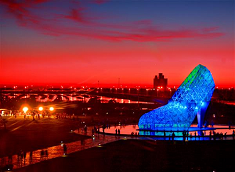

永恆水教堂
路思義教堂
梨山耶穌堂
埔里紙教堂
水晶教堂
高跟鞋教堂的由來
整體設計象徵女孩夢想的美麗高跟鞋與幸福人生，設計概念則取自台灣近現代嫁娶文化中，新娘穿上高跟鞋踏破瓦片，以此告別過去不好的種種，從此展開美好人生的意涵。
嘉南沿海地帶，過去曾經因烏腳病盛行，導致一名將軍鄉的王姓女子在婚前發病，而必須截斷足部，無法在結婚時穿上高跟鞋展開全新的人生。
雲嘉南濱海國家風景管理處認為，在布袋鎮建造一座象徵未來幸福的玻璃高跟鞋教堂，可藉此彌補當年許多因烏腳病而被迫截去雙足女子的心中遺憾，完成她們的夢想
Photo

>>see more